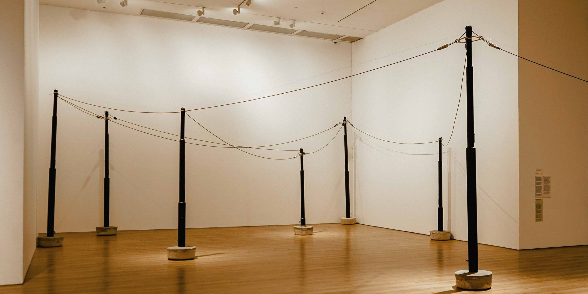

Rebak Raung Warga (2021) by Mira Rizki. Collection of the artist.
Project Eleven is a giving initiative established by the Kabo family in 2016 which seeks to support artists and projects which make an imprint upon their field. We provide funding and support to enable excellence in the development and production of new work, as well as to open new markets. We are interested in works which push the boundaries and explore new ideas. We believe that art matters.
By art, we mean all fields of artistic endeavour, be it visual, aural or anything else. We work with individual artists and artists’ collectives, as well as organisations and peak bodies. We have a particular interest in cross-cultural collaboration in the contemporary arts. We are open to new ideas and partnerships and are willing to take risks in our funding decisions, in the same way that we encourage risk-taking in art.
We envision a world in which artists have the freedom and the means to take creative risks, and where bold ideas move easily across cultures, disciplines and borders. Building on our roots in Australian–Indonesian exchange, we work towards a contemporary arts landscape in which cross-cultural collaboration is an everyday practice rather than an exception, in which every ambitious work can find the support it needs to make its imprint, and in which the value of art to our communities is beyond question. We build through art.